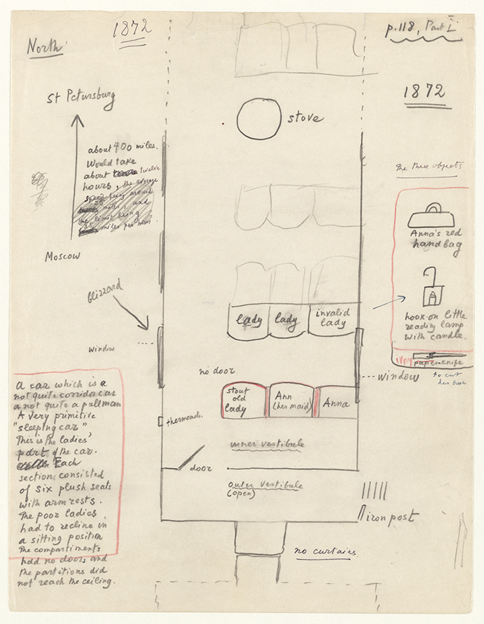
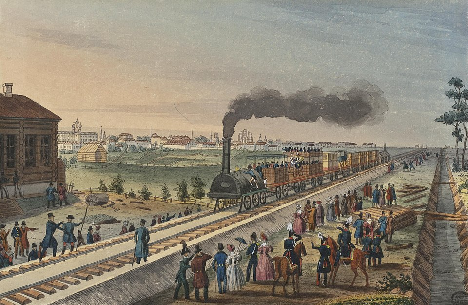

Railways and Trains in Russia and Abroad

Throughout Anna Karenina, railroads serve as settings for travel and important events. During the time the novel is set, trains were widespread in Russia. As Bryan Jimenez Flores cites from Westwood in his entry about the development of the railroad system, “from 1866 to 1900 the length of the common carrier rail network increased from 5,000 km to 53,200 km” (Westwood 59). Therefore, it is logical that the railroad motif is highly prevalent in Anna Karenina, with imagery that provokes multiple interpretations..
In the late 19th century, railways were common in many nations. To understand the context of trains in Anna Karenina, one must be familiar with the similarities and differences in trains worldwide. A distinction was often drawn between the European and American railway systems and train structures. First, the purpose of the railroad in each location differed. In Europe, the railroad was a successor to the development of industrial production, while in America, the railroad preceded manufacturing and opened access to the wilderness (Schivelbusch 89). Additionally, the railroad line design plans had different intentions. For example, England built straight lines to minimize land costs while using cheap labor. Conversely, American lines curved around natural obstacles due to the reverse conditions: land cost practically nothing while labor was expensive (Schivelbusch 96). Furthermore, the architecture of American carriages enabled these sharp turns. Ross Winans designed a new undercarriage consisting of two rigid axles combined with a short distance between them; this structure enabled mobility and helped prevent train derailment during turns (Schivelbusch 99). However, trains in Europe failed to adopt this invention, leading to differing traincars that promoted separate social conventions.. European trains consisted of cars with individual compartments. While people such as Saint-Simon believed railroads would promote equality and harmony among people, in reality, compartments were segregated by class; lower classes were initially transported in boxcars. In contrast, the upper class’s carriages looked like coaches (Schivelbusch 72). This is the necessary context for when Anna and others travel by train, as they are only surrounded by people of equal social position. In contrast, the new undercarriage on American trains enabled the construction of a single long car without compartments, so that everyone was in a single large room together. This allowed for greater mobility and similar experiences among all classes (Schivelbusch 101). European compartments promoted embarrassment rather than conversation, unlike the large, open American cars. Again, this is important to note, since Anna and Vronsky’s mother talks throughout their train ride rather than sit in uncomfortable silence. Overall, the contrasting trail construction in America versus Europe led to different social experiences..This historical context was well known to both Tolstoy and his readers. Specifically, Tolstoy detested the railroad and conveyed this through his semi-autobiographical rendering of Levin, who strongly opposes this technology. Even with these views, Tolstoy heavily relies on the railroad for many themes and also expects readers to understand the historical context to follow along. Scholar Gary Jahn lists many ways to understand the railroad in Anna Karenina, including its symbolism of death, passion, and upper-class society. Jahn's argument is thus:
It is connected to Anna's passion and her death; it is bound up with the nature of the particular society in which she lived; but at the hub from which these interpretations diverge and by which they are organized is the railroad as the representation of the requirements and privileges of the social in the context of the thematic exploration of the conflict between the desires of the individual and the restrictions placed upon the gratification of those desires by the social. (Jahn, 8).
Therefore, understanding the social conventions surrounding railroads during the time Tolstoy wrote Anna Karenina is essential to fully grasping the symbolism of trains throughout the novel.

Works Cited
- Jahn, Gary R. "The Image of the Railroad in Anna Karenina." The Slavic and East European Journal, vol. 25, no. 2, 1981, pp. 1–10. https://doi.org/10.2307/307952.
- Schivelbusch, Wolfgang. "Panoramic Travel." The Railway Journey: The Industrialization of Time and Space in the Nineteenth Century, 1st ed., University of California Press, 2014.
- Westwood, J. N. A History of Russian Railways. George Allen and Unwin, 1964.